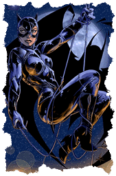

catwoman infos:
Verlag: DC (© Copyright by TM DC Comics)
Name: Catwoman (zu deutsch: Katzenfrau)
Richtiger Name: Selina Kyle
Andere Namen: The Cat
Erstes Erscheinen: Batman Nr. 1 (Frühjahr 1940), da hieß sie noch "The Cat"
Erschaffer: Bill Finger und Bob Kane
Superkräfte: geschickte Meisterdiebin, exzellent Athletin
Ursprung der Kräfte: Ted Grant, alias Wildcat, lehrt sie verschiedene Selbstverteidigungstechniken.
Gegnerin von: Batman
Waffen / Ausrüstung: Peitschen, ausfahrbare, rasiermesserscharfe (Katzen-) Krallen, Kletterhaken
Lebenslauf: Ursprünglich wurde Catwoman als Gegner von Batman eingeführt. Aber nach und nach gab es in den Comicgeschichten auch das eine oder andere Liebesverhältnis zwischen den zwei.
In der Serie "Hush" z.B. verrät Selina Batman alias Bruce Wayne sogar ihre Identität als Catwoman.
Catwoman hatte auch ihre eigenen Comicserien. Während die Serie aus den 1990er Jahren sie eher als Meisterdiebin darstellte, spielt sie in der Serie von 2001 schon eine echte Superheldin die alleine agiert. Obwohl es immer wieder zu Kontakten mit Batman kommt.
Catwoman im Film:
In der 1960er Fernsehserie wurde sie dargestellt von Eartha Kitt und Julie Newmar.
1992 in Batman Returns spielte Michele Pfeiffer die Katzenfrau.
2004 spielte Halle Berry die Titelrolle in Catwoman.
2012 durfte Anne Hathaway die Katzendame in The Dark Knight Rises spielen.
zurück auf die Home-Seite